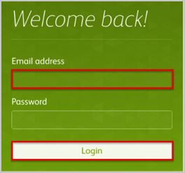

Send an email to Buildkite Support (hello@buildkite.com) and request that they enable SAML 2.0 for your account.
Include the following:
IDP SSO URL: Copy and paste the following:
Sign into the Okta Admin Dashboard to generate this variable.
x.509 Certificate: Download, save, and attach the following:
Sign into the Okta Admin Dashboard to generate this variable.
Buildkite Support will process your request. After receiving a confirmation email, you can start assigning people to the application.
Done!
Notes:
SP-initiated flows, IdP-initiated flows, and Just In Time (JIT) provisioning are all supported.
For SP-initiated flows:
Enter your email address.
Click on the Login button:
